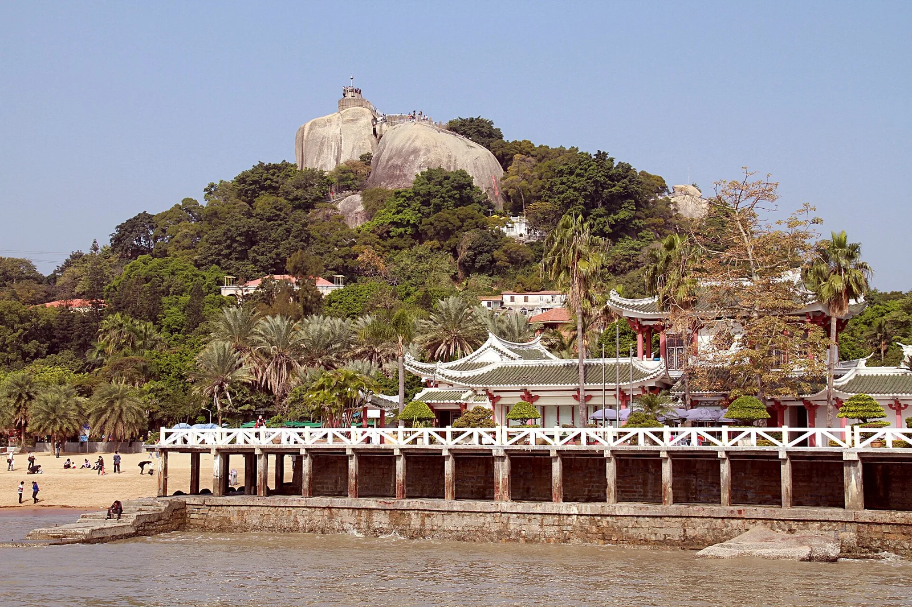

1.随身轻装
身份证、充电宝、纸巾随身携带；鼓浪屿当天穿舒适鞋，带防暑用品、饮水和轻雨具。
五天四晚，从鼓浪屿走到南普陀、沙坡尾、植物园与八市。按日期查看游玩路线、交通接驳、景点实拍和附近美食。

五天山海慢游，沿着颜色发现每天的风景。
时间是建议节奏，节假日交通和排队随当天情况调整。
先选游玩片区，再挑美食类型。推荐综合参考平台评分、评价量、信息更新时间与卡片资料完整度；点卡片看对应实拍（如有）、食客体验与点单思路。
海鲜推荐集中在八市、沙坡尾和文灶酒店周边。两个人可先点一份主菜再加小菜；活海鲜先看清单价、重量和加工费，确认后再下单。每张图片会注明门店实拍、品牌展示或菜式参考。
国庆排队、营业时间、海鲜时价和当日供应会变化；把地址复制到常用地图核对即可，现场优先看价签与菜单。
路线留有弹性，天气、排队和体力比打卡更重要。
身份证、充电宝、纸巾随身携带；鼓浪屿当天穿舒适鞋，带防暑用品、饮水和轻雨具。
出门前查看厦门轮渡、景区和索道的官方运营公告。下雨时缩短海边停留；遇停航或停运，使用每日行程里的备选安排，返程日下雨可取消老城步行。
两人先点主菜，再按食量加小菜；点海鲜先问计价单位、重量和加工费，确认总价后再下单。